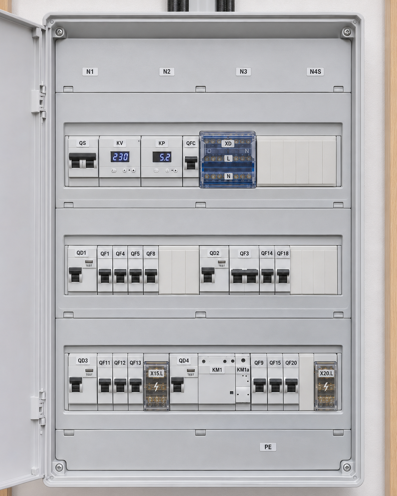

Распределительный щит
Предварительная компоновка 54 модуля, 3×18. Четыре параллельных УЗО и обычные автоматы, один контактор разгрузки. Каждый аппарат подписан по типу; отдельного выходного клеммного ряда нет.
Общая схема питания и защиты
QS — выключатель; KV — реле напряжения; XD — распределительный блок L/N. Оранжевый блок отключается целиком контактором KM1.
Монтажная раскладка с типами аппаратов
Нажмите аппарат: откроется лист его блока. B1/B4 — гребёнки, B2/B3 — перемычки. Резерв бойлера и УЗИП не установлен.
Проводники и управление по блокам
QD1 · Жилые комнаты и техника связи
Соединения выбранного блока. Цвета L/N/PE сохранены; подключения других блоков смотрите на их листах.
QD2 · Проходной свет и две машины
Соединения выбранного блока. Цвета L/N/PE сохранены; подключения других блоков смотрите на их листах.
QD3 · Стационарная кухня
Соединения выбранного блока. Цвета L/N/PE сохранены; подключения других блоков смотрите на их листах.
QD4 · Отключаемые нагрузки
Соединения выбранного блока. Цвета L/N/PE сохранены; подключения других блоков смотрите на их листах.
Разветвления X15.L / X20.L
Соединения выбранного блока. Цвета L/N/PE сохранены; подключения других блоков смотрите на их листах.
Управление разгрузкой
Соединения выбранного блока. Цвета L/N/PE сохранены; подключения других блоков смотрите на их листах.
Общая схема
Соединения выбранного блока. Цвета L/N/PE сохранены; подключения других блоков смотрите на их листах.
Параметры и назначение всех аппаратов
QS — Вводной выключатель нагрузки2P · 63 А · 2 мод.
- Цепь
- Этажный QF0 50 А → QS.L/N → X0. Защита от сверхтока — этажный автомат. PE проходит отдельно, без коммутации.
- Допущение
- 1 фаза 230 В. В этажном щите уже есть УЗО квартирного ввода, условно 100/300 мА типа S; фактический аппарат и систему заземления сверить.
KV — Реле напряжения63 А* · 3 мод.
- Цепь
- X0.L → силовой контакт KV → XD.L; питание N от X0.N. XD.N связан с X0.N. Нужна модель прямой коммутации всего ввода 50 А с допустимым нагревом.
- Настройки
- Пороги напряжения и задержка восстановления — по технике, с учётом холодильника. Это отдельная функция от контроля мощности.
KP — Реле ограничения общей мощностиP / I · TA1 · 3 мод.
- Измерение
- Совместимый изолированный TA1 на фазе после QS до разветвлений; через окно только L. Реле измеряет общую активную мощность. Отдельного измерителя и программируемого контроллера нет.
- Выход
- Один нормально разомкнутый контакт PERMIT разрешает питание катушки KM1. При перегрузке, потере питания или недостоверном измерении разрешение снимается.
- Выбор
- Модель не выбрана: нужны TA1, разрешающий выход, задержка/гистерезис и блокировка раннего повторного пуска. Если этих функций нет, схему уточнить до сборки.
- Уставка
- 9–9,5 кВт — ориентир. Токовый предел и выдержки назначить по фактическому вводу и приборам, без превышения выделенных 10 кВт.
QFC — Автомат цепей управленияB2 · 1P* · 1 мод.
- Питание
- После QD1: B1.L → QFC → XC.L; XC.N от N1. Питает KP, кнопки и катушку KM1. Отдельного дифавтомата нет.
- Подбор
- B2 предварительно: проверить ток катушки, пусковые токи, сечение и защиту измерительных цепей по паспортам.
XD — Распределительный блок L/N≥ 63 А* · 4 мод.
- Связи
- XD.L после KV и XD.N после QS питают входы четырёх УЗО параллельно. Не соединять с выходными N1/N2/N3/N4S.
Место под УЗИП и его защитуне подключён · 3 мод.
- Статус
- FV и F1 не установлены. Необходимость и координацию с защитой здания, аппарат и размер ветви решить до монтажа. Этажное УЗО импульсную защиту не заменяет.
Свободное место · 2 мод.
QD1 — Групповое УЗО: жилые комнаты и техника связи63 А · 30 мА A* · 2 мод.
- Включение
- Вход L/N от XD. Четыре УЗО включены параллельно, не последовательно.
- Выход
- Фаза к B1; нейтраль только к N1. Для QD4 оба проводника предварительно проходят KM1.
- Подбор
- Тип A, 30 мА, 2P, 63 А — предварительно. Ввод 50 А ограничивает ток; согласование по КЗ проверить. Тип A/F/B инверторных приборов — по инструкциям изготовителей.
- Утечки
- Оценить сумму нормальных утечек группы: ориентир не более трети 30 мА. При превышении разделить дифзащиту, сохранив одну ступень разгрузки.
QF1 — Свет: спальня, обе детские и кухня-гостинаяC10 · 1P · 1 мод.
- Защита
- автомат C10, 1P · УЗО QD1; утечку отключает групповое УЗО 30 мА, автомат защищает от перегрузки и КЗ.
- Кабель
- ВВГнг(А)-LS 3×1,5; допустимый ток, прокладку и отключение при КЗ проверить расчётом.
- Подключение
- B1 → QF1 → W1.L; N от N1 → W1.N; PE от XPE → W1.PE.
QF4 — Розетки: спальня, прихожая, коридор и кладоваяC16 · 1P · 1 мод.
- Защита
- автомат C16, 1P · УЗО QD1; утечку отключает групповое УЗО 30 мА, автомат защищает от перегрузки и КЗ.
- Кабель
- ВВГнг(А)-LS 3×2,5; допустимый ток, прокладку и отключение при КЗ проверить расчётом.
- Подключение
- B1 → QF4 → W4.L; N от N1 → W4.N; PE от XPE → W4.PE.
- Что питает
- Спальня: 2 розетки, у тумбочки слева
- Спальня: 2 розетки, у тумбочки справа
- Спальня: 2 розетки, за ТВ на пилоне
- Спальня: Розетка, у кресла, для торшера
- Спальня: Розетка, у двери, для пылесоса
- Спальня: 2 розетки, лючок в полу под рабочим столом: 2 розетки и 2 LAN
- Прихожая: Розетка, у обувницы: сушилка для обуви
- Прихожая: Розетка, база робота-пылесоса
- Спорт-кладовая: Розетка, зарядка самоката, фар, аккумуляторов
- Коридор: Розетка, для пылесоса
QF5 — Розетки обеих детскихC16 · 1P · 1 мод.
- Защита
- автомат C16, 1P · УЗО QD1; утечку отключает групповое УЗО 30 мА, автомат защищает от перегрузки и КЗ.
- Кабель
- ВВГнг(А)-LS 3×2,5; допустимый ток, прокладку и отключение при КЗ проверить расчётом.
- Подключение
- B1 → QF5 → W5.L; N от N1 → W5.N; PE от XPE → W5.PE.
- Что питает
- Детская 1: 3 розетки, у торца стола
- Детская 1: Розетка, в стеллаже-тумбочке у изголовья: телефон заряжается на полке
- Детская 2: 3 розетки, у торца стола
- Детская 2: Розетка, над тумбочкой у изголовья: телефон, ночник
- Детская 2: Розетка, у кресла-мешка: лампа, гирлянда
QF8 — Холодильник, розетки гостиной, сеть, сервер, домофон и защита от протечекC16 · 1P · 1 мод.
- Защита
- автомат C16, 1P · УЗО QD1; утечку отключает групповое УЗО 30 мА, автомат защищает от перегрузки и КЗ.
- Кабель
- ВВГнг(А)-LS 3×2,5; допустимый ток, прокладку и отключение при КЗ проверить расчётом.
- Подключение
- B1 → QF8 → W8.L; N от N1 → W8.N; PE от XPE → W8.PE.
- Что питает
- Кухня-гостиная: Холодильник, за холодильником
- Кухня-гостиная: Розетка, над скамьёй: ноутбук, зарядка
- Кухня-гостиная: 2 розетки, у дивана слева
- Кухня-гостиная: Розетка, за подлокотником дивана, для торшера
- Кухня-гостиная: 2 розетки, за ТВ на стене
- Кухня-гостиная: 2 розетки, за ТВ-тумбой: приставка, консоль
- Прихожая: Розетки сети, роутера, коммутатора и сервера, техническая секция, монтажная панель
- Прихожая: Питание защиты от протечек и домофона, техническая секция
Свободное место · 3 мод.
QD2 — Групповое УЗО: проходной свет и две машины63 А · 30 мА A* · 2 мод.
- Включение
- Вход L/N от XD. Четыре УЗО включены параллельно, не последовательно.
- Выход
- Фаза к B2; нейтраль только к N2. Для QD4 оба проводника предварительно проходят KM1.
- Подбор
- Тип A, 30 мА, 2P, 63 А — предварительно. Ввод 50 А ограничивает ток; согласование по КЗ проверить. Тип A/F/B инверторных приборов — по инструкциям изготовителей.
- Утечки
- Оценить сумму нормальных утечек группы: ориентир не более трети 30 мА. При превышении разделить дифзащиту, сохранив одну ступень разгрузки.
QF3 — Свет: прихожая, коридор, кладовая, санузлы и вентиляторыC10 · 2P · 2 мод.
- Защита
- автомат C10, 2P · УЗО QD2; утечку отключает групповое УЗО 30 мА, автомат защищает от перегрузки и КЗ.
- Кабель
- ВВГнг(А)-LS 3×1,5; допустимый ток, прокладку и отключение при КЗ проверить расчётом.
- Подключение
- B2 → QF3 → W3.L; N от N2 через QF3.N → W3.N; PE от XPE → W3.PE.
QF14 — Стиральная машина · нижняя в колоннеC16 · 1P · 1 мод.
- Защита
- автомат C16, 1P · УЗО QD2; утечку отключает групповое УЗО 30 мА, автомат защищает от перегрузки и КЗ.
- Кабель
- ВВГнг(А)-LS 3×2,5; допустимый ток, прокладку и отключение при КЗ проверить расчётом.
- Подключение
- B2 → QF14 → W14.L; N от N2 → W14.N; PE от XPE → W14.PE.
- Что питает
- С/у 2: Стиральная машина, отдельная розетка сбоку от колонны, доступна без снятия машин, с крышкой IP44
QF18 — Сушильная машина · верхняя в колоннеC16 · 1P · 1 мод.
- Защита
- автомат C16, 1P · УЗО QD2; утечку отключает групповое УЗО 30 мА, автомат защищает от перегрузки и КЗ.
- Кабель
- ВВГнг(А)-LS 3×2,5; допустимый ток, прокладку и отключение при КЗ проверить расчётом.
- Подключение
- B2 → QF18 → W18.L; N от N2 → W18.N; PE от XPE → W18.PE.
- Что питает
- С/у 2: Сушильная машина, отдельная розетка сбоку от колонны, не за машинами; высоту сверить по комплекту установки
Свободное место · 3 мод.
QD3 — Групповое УЗО: стационарная кухня63 А · 30 мА A* · 2 мод.
- Включение
- Вход L/N от XD. Четыре УЗО включены параллельно, не последовательно.
- Выход
- Фаза к B3; нейтраль только к N3. Для QD4 оба проводника предварительно проходят KM1.
- Подбор
- Тип A, 30 мА, 2P, 63 А — предварительно. Ввод 50 А ограничивает ток; согласование по КЗ проверить. Тип A/F/B инверторных приборов — по инструкциям изготовителей.
- Утечки
- Оценить сумму нормальных утечек группы: ориентир не более трети 30 мА. При превышении разделить дифзащиту, сохранив одну ступень разгрузки.
QF11 — Духовой шкафC16 · 1P · 1 мод.
- Защита
- автомат C16, 1P · УЗО QD3; утечку отключает групповое УЗО 30 мА, автомат защищает от перегрузки и КЗ.
- Кабель
- ВВГнг(А)-LS 3×2,5; допустимый ток, прокладку и отключение при КЗ проверить расчётом.
- Подключение
- B3 → QF11 → W11.L; N от N3 → W11.N; PE от XPE → W11.PE.
- Что питает
- Кухня-гостиная: Духовой шкаф, в колонне под духовкой
QF12 — Варочная панель · штатный лимит около 3,5 кВтC32 · 1P · 1 мод.
- Защита
- автомат C32, 1P · УЗО QD3; утечку отключает групповое УЗО 30 мА, автомат защищает от перегрузки и КЗ.
- Кабель
- ВВГнг(А)-LS 3×6; допустимый ток, прокладку и отключение при КЗ проверить расчётом.
- Подключение
- B3 → QF12 → W12.L; N от N3 → W12.N; PE от XPE → W12.PE.
- Что питает
- Кухня-гостиная: Варочная панель, вывод кабеля под варочной, за цоколем
QF13 — Посудомоечная машинаC16 · 1P · 1 мод.
- Защита
- автомат C16, 1P · УЗО QD3; утечку отключает групповое УЗО 30 мА, автомат защищает от перегрузки и КЗ.
- Кабель
- ВВГнг(А)-LS 3×2,5; допустимый ток, прокладку и отключение при КЗ проверить расчётом.
- Подключение
- B3 → QF13 → W13.L; N от N3 → W13.N; PE от XPE → W13.PE.
- Что питает
- Кухня-гостиная: Посудомоечная машина, в соседнем модуле справа от машины
X15.L — Распределительные клеммы фазы санузлов1 → 6 · ≥ 16 А* · 2 мод.
- Подключение
- Один провод с выхода QF15 → изолированный X15.L → шесть ветвей W15.1–W15.6. Нули ветвей к N4S, PE к XPE. Это выход автомата, а не вводная шина.
- Исполнение
- Закрытый блок или соединённые штатными мостиками клеммы; число выходов, сечения и реальные габариты по модели. Зона 2 модуля предварительна.
QD4 — Групповое УЗО: отключаемые нагрузки63 А · 30 мА A* · 2 мод.
- Включение
- Вход L/N от XD. Четыре УЗО включены параллельно, не последовательно.
- Выход
- Фаза к B4; нейтраль только к N4S. Для QD4 оба проводника предварительно проходят KM1.
- Подбор
- Тип A, 30 мА, 2P, 63 А — предварительно. Ввод 50 А ограничивает ток; согласование по КЗ проверить. Тип A/F/B инверторных приборов — по инструкциям изготовителей.
- Утечки
- Оценить сумму нормальных утечек группы: ориентир не более трети 30 мА. При превышении разделить дифзащиту, сохранив одну ступень разгрузки.
KM1 — Общий контактор отключаемых нагрузок2NO · 63 А* · 3 мод.
- Сила
- QD4.L/N выход → два нормально разомкнутых полюса KM1 → B4.L / N4S. Три линии и будущий бойлер отключаются одновременно. PE не коммутируется.
- Катушка
- 230 В: A1 через цепь разрешения и самоподхвата, A2 → XC.N (N1). Не подключать A2 к N4S: управление от другой группы УЗО.
- Подбор
- 63 А — предварительный тепловой номинал. Категорию коммутации смешанной нагрузки, двигателей и электроники, пусковые токи, защиту от КЗ, нагрев и полюс N подтвердить по паспорту. Одного номинала AC-1 недостаточно.
KM1a — Вспомогательный контакт KM11NO · 1 мод.
- Ручной возврат
- Механически связан с KM1; замыкается вместе с ним и шунтирует SB1. После сброса питание самостоятельно не возвращается.
QF9 — Кухонные розетки, чайник, кофеварка, СВЧ и вытяжкаC16 · 1P · 1 мод.
- Защита
- автомат C16, 1P · УЗО QD4 / KM1; утечку отключает групповое УЗО 30 мА, автомат защищает от перегрузки и КЗ.
- Кабель
- ВВГнг(А)-LS 3×2,5; допустимый ток, прокладку и отключение при КЗ проверить расчётом.
- Подключение
- B4 → QF9 → W9.L; N от N4S → W9.N; PE от XPE → W9.PE.
- Что питает
- Кухня-гостиная: 2 розетки, над столешницей в углу: чайник, кофемашина
- Кухня-гостиная: 2 розетки, над столешницей между ПММ и варочной
- Кухня-гостиная: 2 розетки, над столешницей справа от варочной
- Кухня-гостиная: Вытяжка, над верхними шкафами
- Кухня-гостиная: Встроенная СВЧ, в колонне над СВЧ; общая отключаемая линия кухни
QF15 — Оба санузла: розетки, полотенцесушители и тёплые полыC16 · 1P · 1 мод.
- Защита
- автомат C16, 1P · УЗО QD4 / KM1; утечку отключает групповое УЗО 30 мА, автомат защищает от перегрузки и КЗ.
- Кабель
- ВВГнг(А)-LS 3×2,5; допустимый ток, прокладку и отключение при КЗ проверить расчётом.
- Подключение
- B4 → QF15 → X15.L → ветви W15.*; N от N4S → W15.N; PE от XPE → W15.PE.
- Что питает
- С/у 1: Розетка, у зеркала: фен, бритва; с крышкой IP44
- С/у 1: Полотенцесушитель, электрический полотенцесушитель над краем ванны
- С/у 2: Розетка, у зеркала: фен; с крышкой IP44
- С/у 2: Полотенцесушитель, электрический полотенцесушитель на правой стене, в 75 см от душа
- С/у 1: Питание терморегулятора тёплого пола, терморегулятор снаружи санузла; кабель датчика пола отдельно
- С/у 2: Питание терморегулятора тёплого пола, терморегулятор снаружи санузла; кабель датчика пола отдельно
QF20 — Два кондиционера: спальня и гостинаяC16 · 1P · 1 мод.
- Защита
- автомат C16, 1P · УЗО QD4 / KM1; утечку отключает групповое УЗО 30 мА, автомат защищает от перегрузки и КЗ.
- Кабель
- ВВГнг(А)-LS 3×2,5; допустимый ток, прокладку и отключение при КЗ проверить расчётом.
- Подключение
- B4 → QF20 → X20.L → ветви W20.*; N от N4S → W20.N; PE от XPE → W20.PE.
- Что питает
- Спальня: Точка питания и управления кондиционером, общая QF20 для двух кондиционеров; питание блоков и допустимость снятия питания — по модели
- Кухня-гостиная: Точка питания и управления кондиционером, общая QF20 для двух кондиционеров; отдельная ветвь от клемм этой группы
Резерв линии бойлераQF22 · C16* · 1 мод.
- Будущее подключение
- Не установлен и не включён в 13 рабочих линий. B4 → QF22 → W22.L; N от N4S, PE от XPE. Предварительно 3×2,5; модель, мощность и место установки не выбраны.
X20.L — Распределительная клемма фазы кондиционеров1 → 2 · ≥ 16 А* · 1 мод.
- Подключение
- Выход QF20 → изолированный X20.L → W20.1/W20.2. Нули от N4S, PE от XPE. Не соединять X20.L с X15.L или фазами других автоматов.
Внешний вид щита


Ведомость аппаратов
| Обозначение | Тип устройства | Номинал / параметры | Модулей | Назначение | Модель |
|---|---|---|---|---|---|
| QS | Выключатель | 2P · 63 А | 2 | Вводной выключатель нагрузки | Модель подобрать |
| KV | Реле напряжения | 63 А* | 3 | Реле напряжения | Модель подобрать |
| KP | Реле мощности | P / I · TA1 | 3 | Реле ограничения общей мощности | Модель подобрать |
| QFC | Автомат | B2 · 1P* | 1 | Автомат цепей управления | Модель подобрать |
| XD | Распред. блок | ≥ 63 А* | 4 | Распределительный блок L/N | Модель подобрать |
| QD1 | УЗО | 63 А · 30 мА A* | 2 | Групповое УЗО: жилые комнаты и техника связи | Модель подобрать |
| QF1 | Автомат | C10 · 1P | 1 | Свет: спальня, обе детские и кухня-гостиная | Модель подобрать |
| QF4 | Автомат | C16 · 1P | 1 | Розетки: спальня, прихожая, коридор и кладовая | Модель подобрать |
| QF5 | Автомат | C16 · 1P | 1 | Розетки обеих детских | Модель подобрать |
| QF8 | Автомат | C16 · 1P | 1 | Холодильник, розетки гостиной, сеть, сервер, домофон и защита от протечек | Модель подобрать |
| QD2 | УЗО | 63 А · 30 мА A* | 2 | Групповое УЗО: проходной свет и две машины | Модель подобрать |
| QF3 | Автомат | C10 · 2P | 2 | Свет: прихожая, коридор, кладовая, санузлы и вентиляторы | Модель подобрать |
| QF14 | Автомат | C16 · 1P | 1 | Стиральная машина · нижняя в колонне | Модель подобрать |
| QF18 | Автомат | C16 · 1P | 1 | Сушильная машина · верхняя в колонне | Модель подобрать |
| QD3 | УЗО | 63 А · 30 мА A* | 2 | Групповое УЗО: стационарная кухня | Модель подобрать |
| QF11 | Автомат | C16 · 1P | 1 | Духовой шкаф | Модель подобрать |
| QF12 | Автомат | C32 · 1P | 1 | Варочная панель · штатный лимит около 3,5 кВт | Модель подобрать |
| QF13 | Автомат | C16 · 1P | 1 | Посудомоечная машина | Модель подобрать |
| X15.L | Клеммы фазы | 1 → 6 · ≥ 16 А* | 2 | Распределительные клеммы фазы санузлов | Модель подобрать |
| QD4 | УЗО | 63 А · 30 мА A* | 2 | Групповое УЗО: отключаемые нагрузки | Модель подобрать |
| KM1 | Контактор | 2NO · 63 А* | 3 | Общий контактор отключаемых нагрузок | Модель подобрать |
| KM1a | Доп. контакт | 1NO | 1 | Вспомогательный контакт KM1 | Модель подобрать |
| QF9 | Автомат | C16 · 1P | 1 | Кухонные розетки, чайник, кофеварка, СВЧ и вытяжка | Модель подобрать |
| QF15 | Автомат | C16 · 1P | 1 | Оба санузла: розетки, полотенцесушители и тёплые полы | Модель подобрать |
| QF20 | Автомат | C16 · 1P | 1 | Два кондиционера: спальня и гостиная | Модель подобрать |
| X20.L | Клеммы фазы | 1 → 2 · ≥ 16 А* | 1 | Распределительная клемма фазы кондиционеров | Модель подобрать |
| TA1 | Датчик тока | Совместимый изолированный вход KP | вне реек | Общая фаза после QS до разветвлений | Подобрать с KP |
| SB0 | Кнопка «Стоп» | Нормально замкнутый контакт NC | вне реек | Кнопочный пост под щитом, вне мокрых зон | Подобрать |
| SB1 | Кнопка «Возврат» | Нормально разомкнутый контакт NO | вне реек | Тот же пост; разрешение общего KM1 вручную | Подобрать |
УЗО отключает утечку, автомат — перегрузку и КЗ. Дифавтоматов на потребительских линиях нет. Модульные размеры и номиналы предварительные.